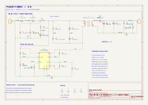
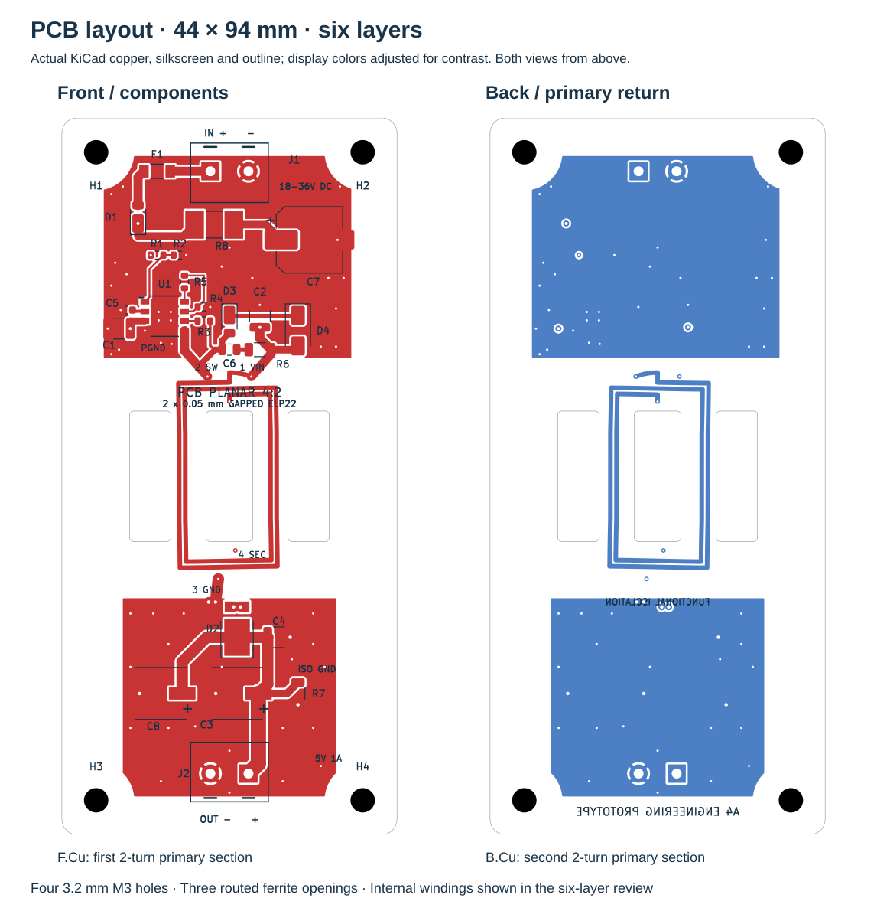
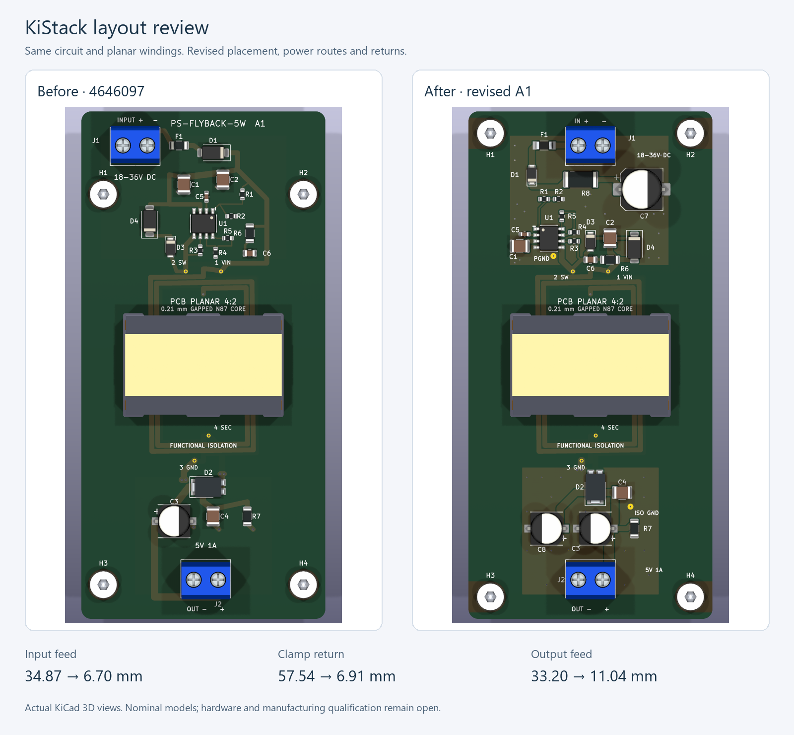
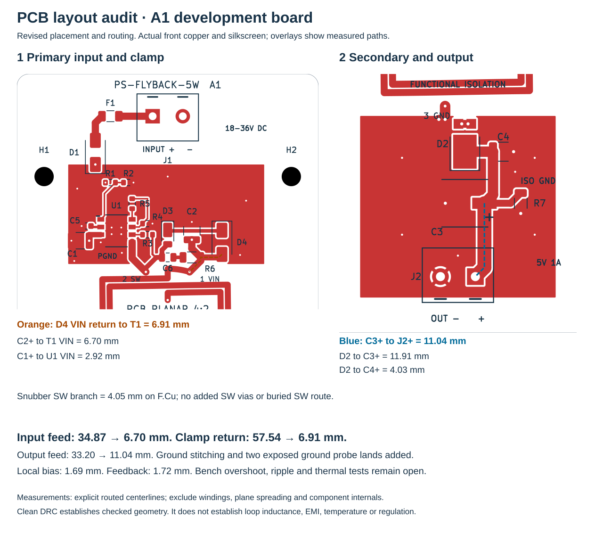

A flyback converter with
the windings in the PCB.
A1 engineering prototype. Editable design and manufacturing review files are complete. JLCPCB sourcing, stack and core installation are unconfirmed. No request or files have been sent to JLCPCB. Hardware performance has not been measured.
18–36 V in. Isolated 5 V, 1 A out.
An LT8302 controller drives four primary turns distributed across the front and back copper. Two internal secondary windings operate in parallel. A prepared N87 core pair closes the magnetic circuit around the finished board.
50 × 104 mm board; 1.6 mm nominal thickness; top-side electronics. Raw ferrite cores may be procured separately from DigiKey; core preparation and installation require a separate qualified process.


Complete 3D assembly
All 29 footprints have bundled local STEP models. All 16 distinct assets load as valid solids, with no nominal intersections in 406 component pairs or 29 substrate checks. The core pair includes its prepared center gap and provisional retention materials; the four M3 mounts are illustrative and excluded from procurement data.
Open the board in KiCad and choose View → 3D Viewer to rotate and zoom. Hardware, enclosure, tolerances and retention qualification remain open.


Connected A4 schematic
The input, controller and transformer share continuous wiring. Both clamp branches connect directly to VIN and SW beside T1. Signal-ground triangles and separated labels identify PGND and GND_ISO; INTVCC remains the separate internal bias supply. All branches are staggered three-way connections; symbol-aware geometry checks and native ERC enforce zero four-way junctions. The revised circuit has 60 logical pins and 29 footprints, including C7/R8 input damping and C8 output bulk. Original component net assignments, planar windings and outline are preserved; the mounting holes now use 4.5 mm corner insets; selected ratings and parts are corrected in the component audit.

Front and back PCB layout
Actual KiCad copper, silkscreen and outline, with display colors adjusted for readability. Both views use top-side coordinates. The front and back primary sections connect in series; secondary windings are on internal layers.

Front vector view · Back vector view · All six copper layers


KiStack audit and M3 mounting
A1 uses four American Embedded M3 Edge footprints: their exposed-substrate openings extend outward to the board sides. The 3.2 mm NPTH drills and outline are unchanged. Hole centers now lie 4.5 mm from both adjacent edges, forming a 41 × 95 mm pattern and moving the upper row away from C7. All-layer copper clearance, drill coordinates and BOM/CPL exclusion are checked. The audit also corrected saved fabrication-rule limits, schematic/PCB metadata and label overlaps.
Read the complete audit and remaining findings · Mounting specification · Actual copper Gerber review
Nominal 3D model coverage and solid checks are complete; actual hardware, enclosure, tolerances and retention still require qualification.
Every component reviewed
The component audit records all 29 footprints: selected part, package and pin mapping, rating, use-case assessment and remaining hardware qualification. It corrects the 18 V startup divider, clamp selection and aging component choices; adds a damped 47 µF input reservoir and 180 µF output capacitor; and verifies 26 extra ground stitches plus two capacitor return vias.
Checks completed
| Check | Result |
|---|---|
| KiCad electrical rules | 0 messages |
| KiCad board rules | 0 violations; 0 unconnected items; 0 schematic-parity issues |
| Schematic to board | 60 logical pins / 61 physical numbered pads agree |
| Planar winding copper | 4 polygons with intended terminal contacts; 19,229 centerline samples within final copper |
| Assembly data | 24 BOM/CPL references match; 22 SMD parts and 2 connectors |
| Fabrication exports | 6 copper Gerbers; 66 filled/capped interlayer holes plus 4 open connector holes and 4 NPTH M3 mounting holes |
These checks establish file consistency and checked geometry. They do not establish physical converter performance or manufacturing acceptance. Independent check record · DRC record · ERC record
PCB layout revised after KiStack review
The input-capacitor feed fell from 34.87 to 6.70 mm, the clamp return from 57.54 to 6.91 mm, and the output feed from 33.20 to 11.04 mm. SW and suppression stay on F.Cu; local input bypassing, aligned connectors, separate ground regions, stitching and exposed ground probe lands improve the physical layout.


INTVCC and RFB remain short at 1.69 and 1.72 mm. The complete audit checks return paths, masks, paste, thermal vias, probe access, mounting, models and manufacturing consistency. Clean rules and shorter routes do not establish physical overshoot, ripple or temperature; bench tests and supplier qualification remain open.
Electrical margins and model limits
The current-stress worksheet estimates 2.06 A primary peak at full load, below the controller's 3.6 A minimum peak-current limit. Its 75% efficiency is an assumption. Worst-case steady switch plateau is 47.7 V; the selected 12 V TVS gives a rating-based clamp estimate of 56.9 V before dynamic overshoot. R3/R4/R5 are 115 kΩ / 10.8 kΩ / 128 kΩ: nominal output 5.024 V. Prototype targets: SW peak below 60 V and SW−VIN peak ≤17.5 V including overshoot and uncertainty. The preliminary resistive RFB bound is 157.1 µA with initial tolerance, 25 ppm/°C over 100°C and a 0.5 V pin allowance. This is not hardware qualification. Retain SMAJ12A / 39 Ω / 470 pF pending measured tuning; revised resistor sourcing remains unverified. Feedback assumptions and release gates.
The 220 Ω preload covers the calculated minimum-energy delivery at maximum L, minimum output voltage, 1.04 A minimum-current ceiling and 12.7 kHz. Input capacitors are sized assuming only 4 µF combined effective capacitance after DC-bias loss. C3/C8 provide 360 µF output bulk; the conservative ripple estimate is 50.58 mV without crediting C4. R8/C7 add damped input capacitance; they do not qualify hot-plug. Ripple and startup targets remain unverified.
| Full-load input | Cycle-model peak | Cycle-model frequency | Winding DC loss |
|---|---|---|---|
| 18 V | 1.70 A | 330 kHz | 0.242 W |
| 24 V | 1.58 A | 380 kHz | 0.201 W |
| 36 V | 1.58 A | 380 kHz | 0.178 W |
Model scope: charge-balanced boundary/DCM power-stage calculations at a fixed 5 V output, with winding resistance, assumed switch resistance and a nominal 380 kHz ceiling. Core loss, switching loss, gap fringing, loop dynamics and burst behavior are excluded. This is not a closed-loop LT8302 SPICE simulation or measured efficiency.
The core is an assembly operation

The supplier must source a prepared pair, install both halves and qualify bonding and retention. Two ungapped catalog halves are not substitutes. The proposed stack also needs fabricator acceptance before the magnetic model can be finalized.
Manufacturing reference information
The package includes an unsent feasibility-request template for board-electronics procurement and assembly, with core procurement separate. It is retained for reference; no supplier contact or purchase is authorized by this example. Catalog identifiers establish part identity; they do not reserve inventory or confirm JLCPCB sourcing.
Before production: vendor DFM acceptance, confirmed stack and sourcing, prepared-core qualification, and first-article regulation, ripple, switching-stress, startup, overload and thermal results. Functional low-voltage isolation only; no mains or safety-isolation certification.
Designed with Planar Studio's transformer workflow. Prepared-gap support: commit 9210fce. A1 audit: American Embedded KiStack, commit 8494dbd. Sources: reference list, component links in the sourcing BOM. Native KiCad files and reproducible generators are included.